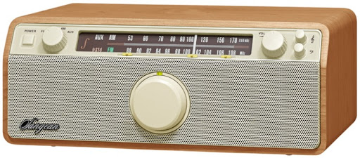

mbc 라디오 채널들을 소개합니다.
저녁, 밤, 그리고 새벽까지의 시간대 방송들을 다룹니다. 
사담을 하자면, 저는 지금 스타벅스 올림픽공원북문점에 왔습니다. 블론드 바닐라 더블 샷 마끼야또를 마시고 있는데, 참 달달하니 맛있군요.
- 푸른 밤, 옥상달빛입니다
- 배철수의 음악캠프
- 신혜림의 JUST POP
신혜림의 JUST POP
편성
MBC FM4U 2019.04.01. ~ (월~일) 오전 01:00~02:00
주파수
91.9MHz 지역별 주파수
공식
공식홈 (mini 메시지, 사연과 신청곡, 그 사람의 원픽, 선곡표, 알립니다)
사이트
인스타그램